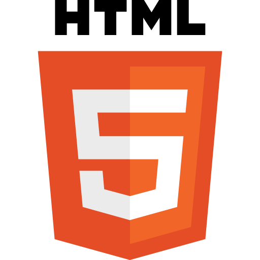
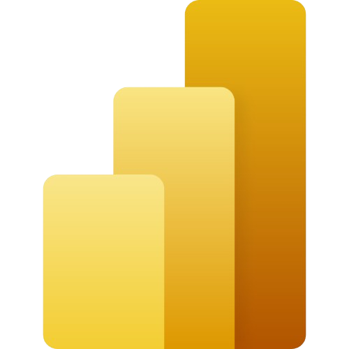
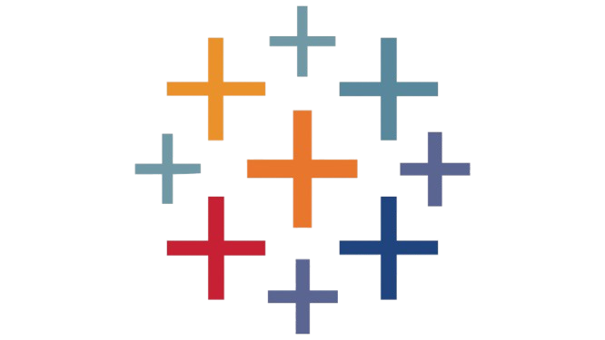
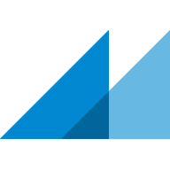
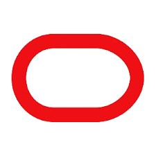
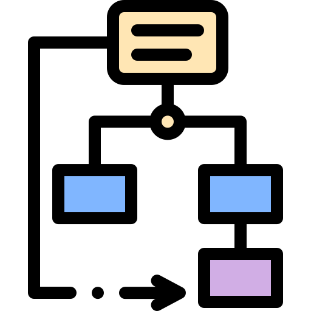

Bonjour, je suis Mandir DIOP.
Étudiant en troisième année de BUT Sciences des Données, parcours Visualisation et Conception d’Outils Décisionnels à l’IUT Grand Ouest Normandie (site de Lisieux).
Passionné par la valorisation des données. J’aime concevoir des applications de visualisation interactives permettant de transformer des données complexes en décisions éclairées.
Mon objectif :rendre les données accessibles, compréhensibles et utiles à travers des outils modernes et performants.
Je suis actuellement disponible dès mars pour un stage de 14 semaines dans les domaines :
Baccalauréat scientifique (Mention Assez-bien)
Lycée Sergent Malamine Camara 🇸🇳
Licence Génie Informatique
Université Iba Der Thiam de Thiés 🇸🇳
BUT Science des Données
IUT Grand Ouest Normandie Lisieux 🇫🇷
Compétences
Analyse de Données
Je transforme les données brutes en informations stratégiques grâce à des méthodes d'exploration et de traitement avancées. Mon travail inclut la préparation rigoureuse des jeux de données, l'identification de tendances significatives, et la création de représentations graphiques impactantes.
Ingénierie des Données
Je construis des architectures de traitement pour automatiser la collecte et la préparation des données à grande échelle. Mon expertise porte sur la mise en œuvre de processus ETL robustes, l'intégration de sources multiples et l'optimisation des flux d'information.
Statistiques
Bonne maîtrise de la statistique descriptive, de l'analyse prédictive et de la statistique inférentielle. Connaissance des méthodes de sondage et de modélisation pour extraire des conclusions fiables à partir de données échantillonnées et réaliser des prévisions pertinentes.
Machine Learning & NLP
Je développe des solutions d'intelligence artificielle adaptées aux besoins métier, notamment dans le domaine du texte. Mon expérience couvre la construction de modèles prédictifs, l'analyse de sentiments, et le traitement linguistique avancé avec des frameworks modernes.
Outils et Technologies

Python
RStudio

HTML
CSS

JavaScript

MySQL

Power BI

Tableau

QGIS
Git
GitHub

VSCode

PHP
Excel

Marp
GanttProject
QlikSense
MongoDB
LaTeX

Canva
PostgreSQL
VBA
SAS

Oracle

UML
NumPy
Talend
Python
RStudio
HTML
CSS
JavaScript
MySQL
Power BI
Tableau
QGIS
Git
GitHub
VSCode
PHP
Excel
Marp
GanttProject
QlikSense
MongoDB
LaTeX
Canva
PostgreSQL
VBA
SAS
Oracle
UML
NumPy
Talend
Expériences Professionnelles
Stage Data Engineer
Agence de l'eau Seine Normandie & Cater COM
Contexte : Transfert des données de haies financées de l'Agence de l'eau Seine Normandie vers la DREAL dans le cadre de la gestion des aides aux projets environnementaux.
- Développement de l'outil SALIX pour le transfert automatisé de données AESN → DREAL
- Web scraping et récupération de flux WFS de la DREAL pour extraction de données géographiques
- Comparaison et validation croisée des données issues de différentes sources
- Collecte et traitement des données géospatiales (PostgreSQL, QGIS)
- Gestion et optimisation de bases de données relationnelles
- Export de données cartographiques pour analyse territoriale
- Intégration de flux de données avec validation et contrôle qualité
Responsable Cuisine
Burger King
- Coordination avec les équipes de production pour optimiser les flux de préparation et garantir le respect des délais de service.
- Gestion des commandes clients en appliquant rigoureusement les standards de qualité et les procédures opérationnelles établies.
- Traitement des bons de commande et contrôle de la conformité des produits avant expédition vers les clients.
Projets
Explorez mon univers Data : des projets variés qui démontrent ma capacité à extraire de la valeur des données complexes.


Contact
Pour toute question ou collaboration, contactez-moi directement via ce formulaire. Vous pouvez aussi visiter mon GitHub ou m’envoyer un email à diopmandir53@gmail.com.